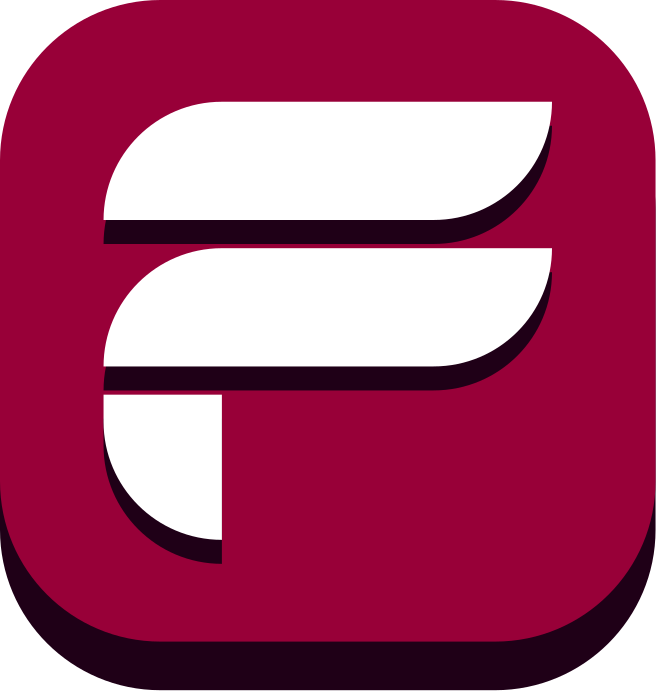

O curso Informática para Internet prepara o aluno para o desenvolvimento de websites, aplicativos e-commerce e serviços relacionados, além de fornecer uma base sólida em tecnologias de programação, banco de dados e desenvolvimento web. O curso promove habilidades essenciais para a sociedade atual. Vem ser Etec!
Jogo de cartas estratégico (solo ou multiplayer) com decks de 20 cartas. Cada carta tem efeito e custo de energia. Jogadores começam com 40 pontos de vida e vencem ao zerar a do oponente.